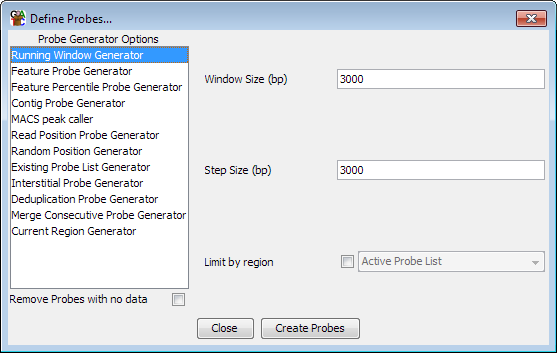

The Running Window Probe Generator
The running window probe generator generates a set of probes at
regular intervals over your genome. It is probably the
most commonly used probe generator.
The running window probe generator is useful when you want to be
able to identify regions of interest in an unbiased way from any
point over your genome.
Options

The options you can set for this generator are:
- The size of the window you want to use. SeqMonk will automatically look
at your data and suggest a size which has a median of 10 reads per window. If you
have defined any data groups then it will look only at the groups otherwise it will
look at all of your data sets. You can of course change this if you prefer to use
a higher or lower value
- The distance between the start of adjacent windows. By default this value will
be the same as the window size such that adjacent windows follow on immediately from
each other. If you want your windows to overlap then you should set this value to
a size which is smaller than your window size.
- Instead of using the whole genome to define probes you can choose to make
windows inside a more constrained region. This can either be an existing probe
list, or it can be the region which is currently visible in the chromosome view.